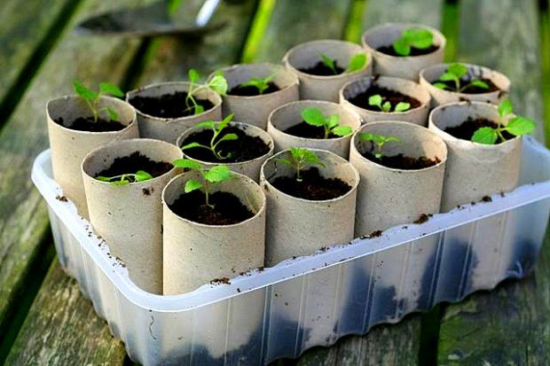

Sobre o trabalho
Esta página foi criada devido à nossa participação no concurso FAQtos, no ano 2017/2018, em que testamos se as radio-frequências afetam o crescimento de sementeiras.
Esta página foi criada devido à nossa participação no concurso FAQtos, no ano 2017/2018, em que testamos se as radio-frequências afetam o crescimento de sementeiras.